계산주의와 인지신경과학 13주차_문장 처리의 확률적 모형: 놀라움 이론 및 RNN/LSTM 기초
고려대학교 일반대학원 심리학과
Published
2026년 5월 29일 금요일 4-5교시
[그림 1] 문장 처리의 확률적 모형: 예측과 놀라움, 그리고 순환 신경망
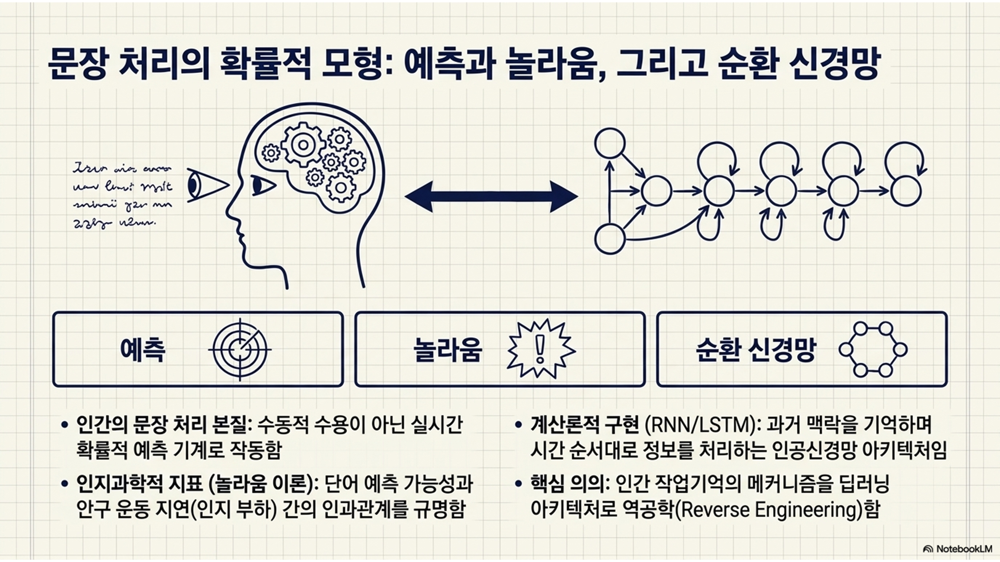
13주차 수업 목표
문장 처리의 확률적 모형 이해: 인간이 문장을 읽을 때 단어를 수동적으로 받아들이는 것이 아니라, 문맥을 바탕으로 다음 단어를 끊임없이 예측하는 확률적 연산 기계임을 이해함.
놀라움(surprisal) 이론과 읽기 시간 시뮬레이션: 단어의 예측 가능성과 인지적 처리 부하(안구 운동 지연)의 관계를 수치화한 놀라움 이론(surprisal theory)를 파이썬 코드로 직접 구현하여 검증함.
순환 신경망(RNN/LSTM) 구조 및 언어심리학적 함의: 과거의 맥락을 기억하며 시간 순서대로 정보를 처리하는 RNN(recurrent neural network)과 LSTM(long short-term memory) 아키텍처의 작동 원리를 바닥부터 구현하고, 이것이 인간의 작업기억과 어떻게 맞닿아 있는지 살펴봄.
1부: 문장 처리의 확률적 모형과 예측 가능성
1.1 언어 처리의 점진성(incrementality)과 예측
이론적 설명
전통적인 언어학에서는 문장이 끝난 후 전체 통사 구조를 파악하여 의미를 해석한다고 보았으나, 현대 심리언어학은 인간의 언어 처리가 극도로 점진적(incremental)임을 입증함.
점진성: 뇌는 단어가 눈에(혹은 귀에) 들어오는 즉시 실시간으로 의미를 구성하며, 심지어 지금까지의 맥락을 바탕으로 아직 나타나지 않은 ’다음 단어’를 확률적으로 미리 예측하고 대기함.
예시 1(일상적 문맥에서의 실시간 예측)
“아침에 눈을 뜨자마자 그는 너무 목이 말라서, 냉장고 문을 벌컥 열고 시원한 [ ]을/를 마셨다.”
문장을 끝까지 다 읽고 나서야 의미를 해석하는 비점진적(non-incremental) 시스템이라면, 빈칸에 어떤 단어가 오든 똑같은 정보 처리 시간을 가질 것.
하지만 인간의 뇌는 극도로 점진적이어서, “시원한”이라는 단어를 읽는 순간 이미 머릿속 심성 어휘집을 뒤져 ‘물’, ‘보리차’, ‘주스’ 등 등장 확률이 높은 후보 단어들을 미리 줄 세워놓고 대기함.
만약 빈칸에 ’물’이 들어오면 예측이 적중하여 안구 운동이 빠르게 넘어가지만, 뜬금없이 ’간장’이 들어오면 예측 오차(surprisal)가 폭발하여 눈동자가 그 단어 위에 오래 머물며 막대한 인지 부하를 겪게 됨.
예시 2(정원길 문장, garden-path sentence)
“철수가 울고 있는 영희를 [ ]”
인간의 뇌는 단어가 들어오는 즉시 실시간으로 문장 구조를 파지(parsing)함. “철수가 울고 있는 영희를”까지 읽는 순간, 뇌는 이미 철수가 주어, 영희가 목적어인 뼈대를 세우고 뒤에 ‘달래주었다’나 ’때렸다’ 같은 서술어가 올 것을 예측함.
하지만 뒤이어 “[ 바라보는 ] 민수를 때렸다.”라고 문장이 이어지면 뇌는 극심한 혼란에 빠짐.
이는 인간의 뇌가 문장이 다 끝날 때까지 안전하게 기다렸다가 해석하는 것이 아니라, 단어가 하나씩 입력될 때마다 성급하게(점진적으로) 의미와 구조를 예측하며 처리하고 있음을 보여주는 강력한 증거임.
이러한 예측 과정은 심성 어휘집에 저장된 단어 간의 통계적 전이 확률(transition probability)을 바탕으로 무의식적이고 자동적으로 이루어짐.
단어 간의 통계적 전이 확률
특정 단어(예: ‘비가’)가 등장했을 때, 바로 다음에 특정 단어(예: ‘내린다’)가 짝을 이루어 이어질 확률을 의미함.
우리의 뇌는 평생 동안 수많은 텍스트와 대화를 접하면서 이 ’단어들의 짝꿍 통계치’를 무의식적인 빅데이터로 축적해둠.
예: “맛있는”이라는 단어 뒤에는 “음식”이나 “사과”가 올 전이 확률은 매우 높지만, “책상”이 올 전이 확률은 0에 가까움. \(\Rightarrow\) 뇌는 이 내장된 확률 통계표를 바탕으로 다음 단어를 실시간으로 예측함.
심화 해설(N-gram 모델과 마르코프 가정)
계산언어학에서 예측 가능성을 모델링하는 가장 기초적인 방법은 N-gram 확률 모형임.
N-gram 확률 모형
문맥 기반 예측을 수학적으로 단순화하기 위해, 다음 단어의 등장 확률이 오직 직전 N-1개의 단어에만 의존한다고 가정하는 마르코프 가정(Markov assumption)을 사용함.
예: 바이그램(bigram) 모델 \(P(w_t | w_{1:t-1}) \approx P(w_t | w_{t-1})\)은 직전 단어 하나만을 보고 다음 단어를 예측함.
\(P(w_t | w_{1:t-1})\)
문장의 처음부터 지금까지 나온 ’모든 단어의 문맥’이 주어졌을 때, 바로 다음 자리에 특정 단어가 등장할 진짜 확률.
“원래 다음 단어를 완벽하게 예측하려면 지금까지 나온 모든 단어의 역사(전체 문맥)를 다 고려해야 함.
\(P(w_t | w_{t-1})\)(바이그램 모델): 하지만 문장이 100단어, 1000단어로 길어지면 컴퓨터가 모든 경우의 수를 계산하는 건 불가능함. 따라서 과거는 다 잊고, 오직 바로 앞에 나온 ‘직전 단어’ 딱 1개만 보고 다음 단어를 예측해도 얼추 비슷하게 맞을 거라고 가정하자는 것.
해설: 인간이나 이상적인 AI는 문장 전체를 보지만(좌항), 초기 언어 모델인 N-gram은 계산을 편하게 하고자 직전 단어 하나만 보는 꼼수(우항)를 썼다는 것.
조건부 확률 산출: 말뭉치에서 두 단어가 연속으로 등장한 횟수를 앞 단어의 전체 등장 횟수로 나누어 산출함.
비유(스마트폰의 다음 단어 추천)
언어 처리의 점진성과 예측은 스마트폰 키보드 위에 뜨는 ‘다음 단어 추천’ 기능과 정확히 같음.
“오늘”을 치면 “날씨가”, “점심”, “저녁” 등이 뜨고, “오늘 점심”을 치면 “메뉴는”, “뭐 먹지” 등이 뜨는 것처럼, 우리의 뇌도 문장을 읽을 때 다음에 올 후보 단어들의 확률 분포를 실시간으로 업데이트하고 있음.
[그림 2] 점진적 문장 처리와 뇌 속의 실시간 예측 메커니즘
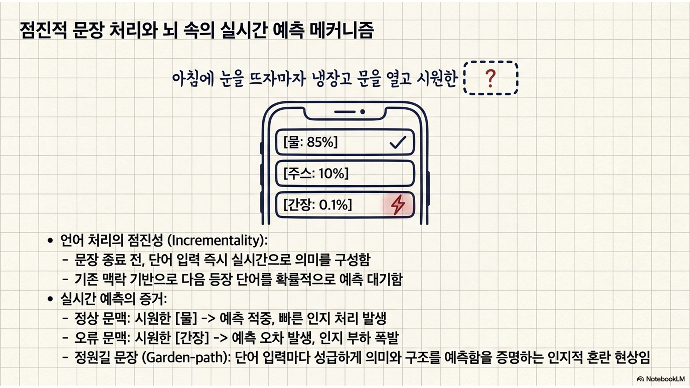
[그림 3] 말뭉치 기반 전이 확률 행렬 구조
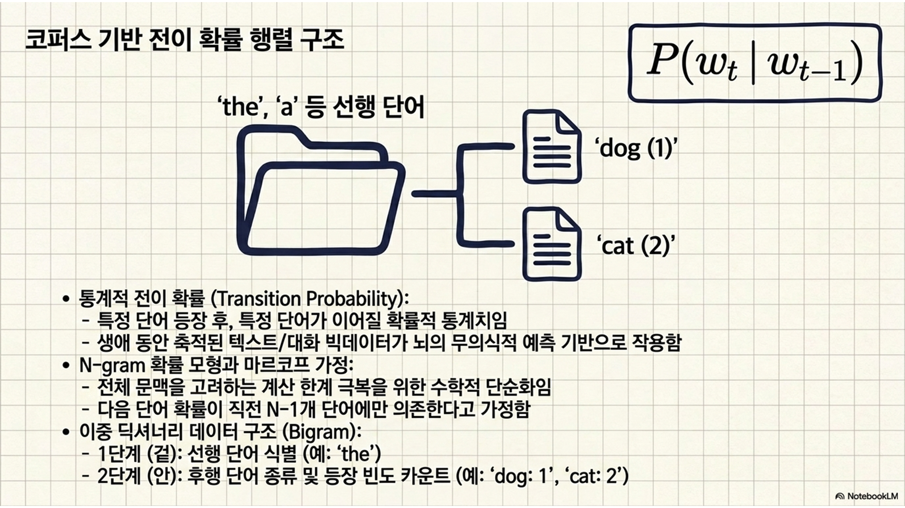
[실습 1-1] 통계적 전이 확률(bigram probability)) 계산 모델 셋업
이중 딕셔너리
1단계 분류(겉 딕셔너리): 앞에 나온 단어가 무엇인가? (예: ‘the’)
2단계 분류(안쪽 딕셔너리): 그 뒤에 이어서 나온 단어는 무엇이며, 몇 번 나왔는가? (예: ’dog’가 1번, ’cat’이 2번)
bigram_counts =
{
'the': {'dog': 1, 'cat': 2}: 겉 딕셔너리의 키: ‘the’. {} 뭉치 전체가 안쪽 딕셔너리.
'a': {'boy': 3, 'girl': 1}: 겉 딕셔너리의 키: ‘a’. {} 뭉치 전체가 안쪽 딕셔너리.
}
Code
# =========================================================================# [실습 1-1] 텍스트 말뭉치 기반 단어 간 전이 확률 추출# =========================================================================# 수치 연산을 위한 넘파이 라이브러리와 텍스트 데이터 처리를 위한 컬렉션 모듈을 불러옴import numpy as npfrom collections import defaultdict, Counter# ---------------------------------------------------------# 1. 미니 말뭉치 구축 및 전처리# ---------------------------------------------------------# 모델이 언어적 패턴을 학습할 가상의 아주 작은 말뭉치를 리스트 형태로 정의함corpus = ["the dog barks loudly","the cat meows softly","the dog chases the cat","the cat sleeps deeply","the dog eats food","the cat eats fish"]# 말뭉치 내의 모든 문장을 단어 단위로 쪼개어 연속된 리스트로 변환하기 위한 빈 리스트를 생성함tokens = []# 말뭉치 내의 문장을 하나씩 순회함for sentence in corpus:# 문장을 공백 기준으로 분리하고, 문장의 시작과 끝을 알리는 특수 토큰을 양끝에 부착하여 토큰 리스트에 연장함 tokens.extend(["<START>"] + sentence.split() + ["<END>"])# ---------------------------------------------------------# 2. 바이그램 빈도수 측정 및 어휘 사전 생성# ---------------------------------------------------------# 이전 단어가 주어졌을 때 다음 단어들의 출현 횟수를 카운트하기 위해 이중 딕셔너리 구조를 생성함bigram_counts = defaultdict(Counter) # 겉 딕셔너리에 키가 없으면 새 딕셔너리를 만들어주고(defaultdict), 안쪽 딕셔너리에 키가 없으면 0부터 숫자를 세기 시작하라(Counter)!# 이전 단어의 총 출현 횟수를 저장하기 위한 딕셔너리를 생성함unigram_counts = Counter()# 토큰 리스트를 처음부터 끝 직전까지 순회하며 현재 단어와 다음 단어의 쌍(bigram)을 추출함for i inrange(len(tokens) -1): current_word = tokens[i] next_word = tokens[i+1]# 이전 단어의 총 등장 횟수를 1 증가시킴 unigram_counts[current_word] +=1# 이전 단어 다음에 특정 다음 단어가 이어서 등장한 횟수를 1 증가시킴 bigram_counts[current_word][next_word] +=1# ---------------------------------------------------------# 3. 조건부 확률(전이 확률) 딕셔너리 변환# ---------------------------------------------------------# 단순 빈도수를 확률 값(0.0 ~ 1.0)으로 변환하여 저장할 새로운 딕셔너리를 생성함transition_probs = defaultdict(dict) # 겉 딕셔너리(transition_probs)에 없는 단어 키를 부르면, 에러를 내지 말고 알아서 dict()를 실행해서 텅 빈 안쪽 딕셔너리 {}를 만들어라!# bigram_counts에 기록된 이전 단어와 그에 따른 다음 단어들의 빈도수 묶음을 하나씩 순회함for prev_word, next_words in bigram_counts.items():# 해당 이전 단어 뒤에 등장한 다음 단어와 빈도수를 순회함for next_w, count in next_words.items():# 결합 빈도수를 이전 단어의 전체 빈도수로 나누어 조건부 확률 P(next_w | prev_word)를 산출함 prob = count / unigram_counts[prev_word]# 산출된 확률 값을 딕셔너리에 저장함 transition_probs[prev_word][next_w] = prob# 확률 계산이 정상적으로 완료되었음을 콘솔창에 알림print("-> 1단계 셋업 완료: 미니 말뭉치 기반 바이그램 전이 확률 계산이 완료됨.")# 특정 단어 'the' 뒤에 올 수 있는 단어들의 예측 확률 분포를 출력해봄print("\n[단어 'the' 직후에 특정 단어가 등장할 확률 분포]")for word, p in transition_probs['the'].items():print(f"P({word:4s} | the) = {p:.2f}")
-> 1단계 셋업 완료: 미니 말뭉치 기반 바이그램 전이 확률 계산이 완료됨.
[단어 'the' 직후에 특정 단어가 등장할 확률 분포]
P(dog | the) = 0.43
P(cat | the) = 0.57
1.2 정보이론적 놀라움과 읽기 시간
이론적 설명
Hale(2001)과 Levy(2008)가 제안한 놀라움 이론(surprisal theory)은 단어의 통계적 예측 가능성과 인간의 인지적 노력 간의 인과관계를 수학적으로 정의함.
뇌는 예측된 확률 분포와 실제로 입력된 자극 사이의 괴리를 수정하는 데 에너지를 소모하며, 이 에너지 소모량은 안구 운동 추적 실험에서 타겟 단어를 응시하는 읽기 시간의 지연으로 나타남.
즉 어떤 단어가 현재 맥락에서 등장할 확률이 낮을수록 뇌는 크게 ‘놀라게’ 되며, 이 놀라움의 크기만큼 정보 처리 시간이 길어짐.
로그(log) 함수에 마이너스(-) 기호를 붙인 형태이므로, 단어의 등장 확률(\(P\))이 1.0(100%)에 가까울수록 놀라움은 0에 수렴함(전혀 놀랍지 않음, 정보량 없음).
반대로 확률(\(P\))이 0에 가까울수록 놀라움 수치는 무한대로 치솟음(극도로 놀람, 막대한 정보 처리 부하 발생).
비유(뻔한 클리셰 vs. 충격적 반전)
영화를 볼 때 악당이 패배하고 주인공이 승리하는 ’뻔한 클리셰(확률이 높은 전개)’는 우리가 쉽게 이해하고 넘어가므로 뇌가 에너지를 쓸 필요가 없음(놀라움 값 낮음, 빠른 읽기 시간).
하지만 믿었던 주인공이 사실 진짜 악당이었다는 ’충격적 반전(확률이 극히 낮은 전개)’이 등장하면, 뇌는 이 상황을 이해하기 위해 일시 정지하여 막대한 인지적 노력을 기울여야 함(놀라움 값 높음, 느린 읽기 시간).
[그림 4] 놀라움 이론: 뇌의 예측 오차와 안구 운동 지연의 인과관계
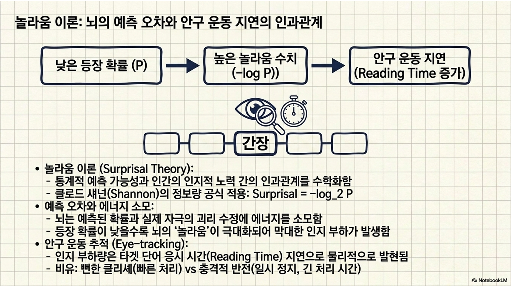
[그림 5] 시뮬레이션 기반 놀라움 수치(surprisal) 산출 곡선 및 예측 읽기 시간 매핑
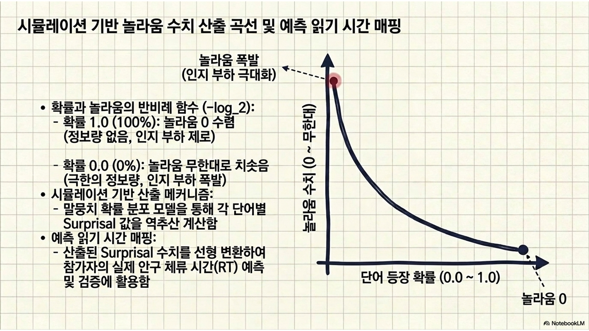
[실습 1-2] 놀라움 값 계산 및 읽기 시간 지연 시뮬레이션
Code
# =========================================================================# [실습 1-2] 놀라움 값 연산 및 예측 인지 부하(읽기 시간) 시각화# =========================================================================# 그래프 시각화를 위해 matplotlib을 불러옴import matplotlib.pyplot as plt# ---------------------------------------------------------# 1. 텍스트 정보량(surprisal) 산출 함수 정의# ---------------------------------------------------------# 입력받은 확률 값 p를 바탕으로 놀라움 수치를 계산하여 반환하는 사용자 정의 함수를 선언함def calculate_surprisal(p):# 만약 말뭉치에 등장한 적 없는 단어 조합이라 확률이 0인 경우, 무한대 에러를 방지하기 위해 최소한의 확률값(0.001)을 강제 부여함if p ==0: p =0.001# 섀넌의 정보량 공식에 따라 확률 p에 밑이 2인 로그를 취하고 마이너스를 붙여 놀라움 값을 도출함return-np.log2(p)# ---------------------------------------------------------# 2. 테스트 문장 평가 및 단어별 인지 부하 시뮬레이션# ---------------------------------------------------------# 뇌의 예측 능력을 테스트할 두 개의 문장을 정의함(하나는 뻔한 문장, 하나는 낯선 문장)test_sentences = ["the dog barks loudly", # 개가 짖는다는 익숙한 흐름(놀라움 값 낮음 예측)"the cat barks loudly"# 고양이가 짖는다는 낯선 흐름(놀라움 값 높음 예측)]# 두 문장에 대한 시각화를 한 번에 그리기 위해 1행 2열의 다중 그래프 캔버스를 가로 10인치, 세로 4인치로 생성함fig, axes = plt.subplots(1, 2, figsize=(10, 4))# 테스트 문장 리스트를 하나씩 순회하며 인덱스 i와 문장 텍스트 sentence를 추출함for i, sentence inenumerate(test_sentences):# 평가를 위해 테스트 문장을 띄어쓰기 기준으로 토큰화함 words = sentence.split()# 각 단어를 처리할 때마다 산출되는 놀라움 수치를 누적 저장할 빈 리스트를 생성함 surprisal_values = []# 문장의 첫 번째 단어(인덱스 0)는 이전 문맥 단어가 존재하지 않으므로 임의의 중간 정도 놀라움 값(2.0)을 부여함 surprisal_values.append(2.0) # 두 번째 단어부터 마지막 단어까지 순차적으로 순회하며 직전 단어와의 관계성을 평가함for j inrange(1, len(words)): prev_w = words[j-1] curr_w = words[j]# 실습 1-1에서 훈련시킨 transition_probs 딕셔너리에서 직전 단어 뒤에 현재 단어가 등장할 확률 p를 꺼내옴. 기록이 없으면 0.0을 반환함 p = transition_probs.get(prev_w, {}).get(curr_w, 0.0)# 섀넌 공식 함수를 호출하여 확률 p를 놀라움 수치로 변환함 surprisal = calculate_surprisal(p)# 산출된 인지적 놀라움 수치를 히스토리 리스트에 추가함 surprisal_values.append(surprisal)# ---------------------------------------------------------# 3. 놀라움 값(예측 읽기 시간) 막대 그래프 시각화# ---------------------------------------------------------# i번째 서브플롯 영역에 단어들을 X축으로, 놀라움 수치를 Y축으로 하는 막대 그래프를 산호색으로 그림 axes[i].bar(words, surprisal_values, color='coral', edgecolor='black', alpha=0.8)# 각 서브플롯의 제목을 해당 테스트 문장 텍스트로 지정함 axes[i].set_title(f"Sentence {i+1}: '{sentence}'")# Y축 라벨을 명시하여 막대의 높이가 인지적 부하(놀라움의 수준)를 뜻함을 알림 axes[i].set_ylabel("Surprisal (bits / Cognitive Load)")# Y축의 범위를 동일하게 고정하여 두 문장 간의 놀라움 크기 격차를 직관적으로 비교할 수 있게 함 axes[i].set_ylim(0, 11)# 수치 파악을 돕기 위해 Y축 방향으로만 옅은 회색의 점선 가이드망을 깔아줌 axes[i].grid(axis='y', linestyle='--', alpha=0.6)# 두 서브플롯 간의 간격을 알맞게 자동 조정함plt.tight_layout()# 완성된 놀라움 수치 기반 인지 부하 비교 시각화 그래프를 화면에 출력함plt.show()# 해석 문구를 콘솔창에 출력하여 실험 결과를 설명함print("-> 고양이(cat) 뒤에 짖는다(barks)가 등장했을 때 확률(P)이 0으로 치닫아 놀라움 수치가 폭증함.")print("-> 안구 운동 추적 실험 시, 피험자의 시선은 바로 저 'barks'라는 단어 위에서 오랫동안 머물게 됨(인지 부하 발생).")
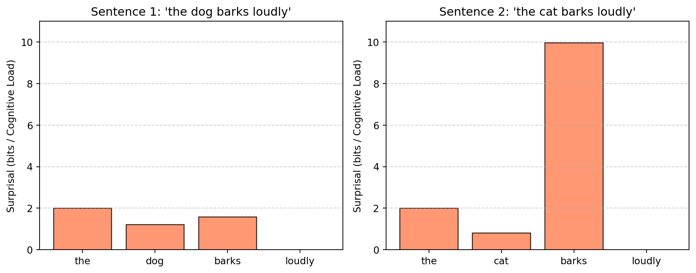
-> 고양이(cat) 뒤에 짖는다(barks)가 등장했을 때 확률(P)이 0으로 치닫아 놀라움 수치가 폭증함.
-> 안구 운동 추적 실험 시, 피험자의 시선은 바로 저 'barks'라는 단어 위에서 오랫동안 머물게 됨(인지 부하 발생).
2부: 순환 신경망(RNN/LSTM) 기초와 언어심리학적 함의
2.1 순환 신경망의 기초: 과거의 맥락 기억하기
이론적 설명
이전에 배운 다층 퍼셉트론이나 순방향 신경망(feed-forward neural network)은 기억력이 존재하지 않는 치명적인 단점이 있음. 입력이 들어가면 출력이 나올 뿐, 직전에 어떤 단어를 처리했는지 맥락을 유지하지 못함.
그러나 인간의 언어 처리는 시간의 흐름을 따라 이루어짐. 순환 신경망(recurrent neural network, RNN)은 내부에 스스로를 맴도는 순환 고리(loop)를 만들어 과거의 정보를 현재로 전달하는 구조를 창안함.
따라서 \(t\) 시점의 은닉층(hidden layer)은 단순히 \(t\) 시점의 입력뿐만 아니라, 과거의 맥락이 농축된 \(t-1\) 시점의 은닉 상태(hidden state)를 동시에 융합하여 업데이트됨.
은닉층과 은닉 상태의 구분
두 용어는 혼용되기 쉬우나, 은닉층은 정보를 담는 ’구조적 그릇(공간)’이고 은닉 상태는 그 안에 담긴 ’데이터(내용물)’라는 명확한 차이가 있음.
은닉층: 입력과 출력 사이에서 연산이 일어나는 물리적인 신경망 구조 자체를 가리킴. 비유하자면 복잡한 연산을 위해 교실에 설치된 고정된 커다란 칠판(장소)과 같음.
은닉 상태: 특정 시간(\(t\))에 은닉층 뉴런들이 머금고 있는 구체적인 활성화 수치(정보)를 가리킴. 비유하자면 시간 흐름에 따라 칠판에 썼다 지워지며 남겨진 현재의 메모(데이터)와 같음.
본문 해석: 계산을 수행하는 고정된 장소(은닉층)에서, 방금 전까지 남아있던 과거의 정보(이전 은닉 상태)와 새로운 입력을 버무려 현재의 정보(새로운 은닉 상태)를 쉼 없이 갱신해나간다는 의미임.
과거와 현재의 융합:\(x_t\)는 눈으로 방금 읽은 ’새로운 단어(현재 자극)’를, \(h_{t-1}\)은 뇌에 남아있는 ’직전까지의 문맥(과거 기억)’을 뜻함. 뇌가 이 두 가지 정보에 각각의 중요도(가중치 \(W\))를 곱하여 하나로 섞는 덧셈 과정임.
\(\tanh\) 함수의 압축기 역할: 매 단어를 읽을 때마다 과거와 현재의 정보를 계속 더하기만 하면 숫자가 무한대로 폭주함. 하이퍼볼릭 탄젠트(\(\tanh\))라는 비선형 함수는 아무리 큰 텐서 값이 들어와도 그 크기를 -1에서 1 사이의 안전한 규격으로 눌러 담아주는 압축기 역할을 함.
기울기 소실(vanishing gradient)의 비극: 문장이 10단어, 20단어로 아주 길어지면 치명적인 문제가 발생함. 첫 단어의 정보가 끝까지 살아남으려면 좁은 신경망 통로를 지나며 가중치(\(W\))와 수십 번 반복해서 곱해져야 함.
만약 이 가중치가 1보다 작은 소수(예: 0.5)일 경우, 계속 곱할수록(0.5 \(\rightarrow\) 0.25 \(\rightarrow\) 0.125 \(\rightarrow\) …) 순식간에 0으로 수렴하게 됨. 결국 문장 초반의 맥락이 문장 끝에 가서는 완전히 증발해버림.
이를 딥러닝에서는 기울기 소실 문제라고 부르며, 인공 신경망 모델이 너무 긴 문장을 들으면 앞부분을 심각하게 잊어버리는 치명적인 ’건망증(단기 기억 상실)’을 수학적으로 보여주는 현상임.
비유(이어달리기 바통 터치)
RNN의 은닉 상태(\(h_t\))는 이어달리기 선수가 들고 뛰는 ’바통’과 같음.
1번 주자(첫 번째 단어)가 달린 후 그 열기와 정보가 담긴 바통을 2번 주자에게 넘기고, 2번 주자(두 번째 단어)는 자신의 힘(현재 입력)을 덧붙여 3번 주자에게 바통을 넘김. 결국 마지막 주자가 들고 있는 바통에는 이전 모든 주자들의 노력이 농축되어 있는 것임.
[그림 6] RNN 아키텍처의 시간 축 전개 구조
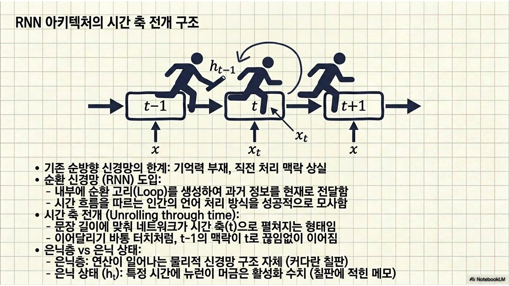
[그림 7] RNN 은닉 상태 내부의 텐서 병합 메커니즘
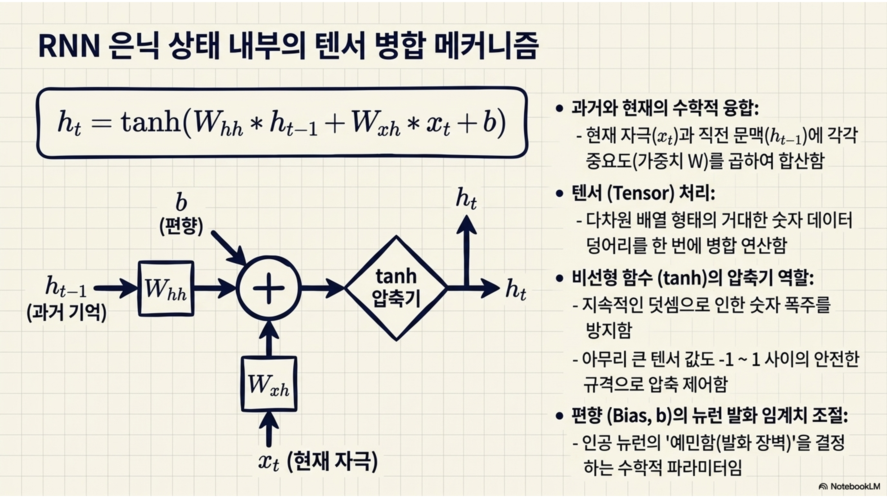
[실습 2-1] 기본 RNN 순전파(forward pass) 구현
텐서(tensor)의 이해
정의: 딥러닝과 인공신경망에서 엄청난 양의 데이터를 담아 초고속으로 연산하기 위해 사용하는 ’다차원 숫자 배열(데이터 컨테이너)’을 총칭하는 수학적 용어임.
차원에 따른 진화: 숫자를 어떻게 묶어두었느냐에 따라 부르는 이름이 다를 뿐, 사실 모두 텐서의 일종임.
0차원 텐서 = 스칼라: 숫자 1개 (예: 점).
1차원 텐서 = 벡터: 숫자들의 한 줄 나열 (예: 선).
2차원 텐서 = 행렬: 가로세로가 있는 표 (예: 엑셀 시트 1장, 면).
3차원 이상 = 텐서: 표가 여러 장 겹친 입체 데이터 (예: 엑셀 시트가 여러 개 묶인 파일, 큐브).
실습 코드에서의 의미: 컴퓨터가 계산을 빨리하기 위해 여러 개의 1차원 벡터나 2차원 행렬들을 겹겹이 묶어놓은 ’거대한 숫자 데이터 덩어리’를 뜻함.
편향(bias, \(b\))과 생물학적 뉴런의 발화(firing) 임계치
노드 = 인공 뉴런: 딥러닝에서 ’노드’는 생물학적 ’뉴런’을 수학적으로 모델링한 것임. 따라서 인공신경망 노드의 ’발화’는 뉴런이 임계치를 넘어 전기 신호(활동전위)를 뿜어내는 발화 현상을 의미함.
발화 임계치의 개인차: 실제 뇌의 뉴런들은 성격이 다 다름. 아주 예민해서 작은 자극에도 쉽게 찌릿 하고 발화하는 뉴런이 있는 반면, 굉장히 둔감해서 거대한 자극이 와야만 겨우 발화하는 뉴런도 존재함.
편향의 역할: 인공신경망에서 각 뉴런의 이 ’예민함의 정도(임계치)’를 조절해주는 수학적 파라미터가 바로 편향 벡터임.
작동 원리: 학습을 통해 어떤 노드의 편향 값이 양수(+)로 커지면, 그 뉴런은 진입 장벽(임계치)이 낮아져 작은 입력값에도 쉽게 예민하게 반응하여 발화(활성화)함. 반대로 음수(-) 값을 가지면 진입 장벽이 높아져 웬만한 자극에는 침묵하도록 통제됨.
X_sequence = [np.random.randn(input_size, 1) for _ in range(sequence_length)]
이 한 줄의 코드는 딥러닝에서 ’시계열 데이터(문장)’를 만들어내는 아주 핵심적인 구문임.
1. np.random.randn(input_size, 1): “단어 하나 만들기”
평균 0, 표준편차 1을 따르는 무작위 난수(random) 행렬을 생성하는 넘파이 함수임.
input_size가 4이므로, 세로로 4칸, 가로로 1칸인 [4 x 1] 형태의 열 벡터를 생성함.
인지 모델링 관점에서는 이 4차원 숫자 덩어리가 곧 ’단어 1개(예: dog)’를 표상함.
2. for _ in range(sequence_length): “문장 길이만큼 반복하기”
sequence_length가 5이므로, 위의 ‘단어 1개 만들기’ 작업을 총 5번 반복하라는 뜻임.
여기서 언더바(_)는 “반복 횟수(5번)만 중요할 뿐, 0, 1, 2… 같은 인덱스 숫자 자체는 따로 꺼내서 변수로 쓰지 않겠다”는 파이썬의 관례적인 표현임.
3. [ ... ](리스트 컴프리헨션): “하나의 문장으로 묶기”
반복문을 돌며 생성된 5개의 단어 벡터들을 흩어지게 두지 않고, 가장 바깥쪽의 대괄호 [] 안에 차곡차곡 모아 하나의 ’리스트’로 담아냄.
최종 결론: 이 한 줄의 코드는 “4차원짜리 단어 벡터(4개의 숫자)를 5번 연속으로 찍어내어, 총 5개의 단어로 구성된 1개의 가상 테스트 문장 리스트를 완성하라”는 뜻임. \(\Rightarrow\) RNN의 시간 축(t=0~4)을 따라 순차적으로 입력될 5개의 징검다리를 만들어낸 것임.
Code
# =========================================================================# [실습 2-1] 넘파이를 활용한 기본 RNN의 순차적 은닉 상태 갱신 구현# =========================================================================# ---------------------------------------------------------# 1. 망 구조 크기 및 파라미터 초기화# ---------------------------------------------------------# 단어를 임베딩 벡터로 표현했을 때의 차원 크기를 4차원으로 가정함input_size =4# 과거의 맥락을 기억해둘 은닉 상태 공간의 차원 크기를 3차원으로 지정함hidden_size =3# 실험의 재현성을 위해 넘파이 난수 생성 시드를 고정함np.random.seed(42)# 은닉 상태에서 은닉 상태로 이어지는 과거 기억 전달용 가중치 행렬 [3 x 3]을 무작위 난수로 초기화함W_hh = np.random.randn(hidden_size, hidden_size)# 현재 입력 단어에서 은닉 상태로 이어지는 현재 정보 수신용 가중치 행렬 [3 x 4]를 무작위 난수로 초기화함W_xh = np.random.randn(hidden_size, input_size)# 노드의 발화 임계치를 조절할 편향 벡터를 영벡터로 초기화함b = np.zeros((hidden_size, 1))# ---------------------------------------------------------# 2. 가상의 문장(시퀀스) 입력 생성 및 초기 상태 부여# ---------------------------------------------------------# 5개의 단어로 구성된 문장을 가정하고, 총 5턴(time steps) 동안 들어올 입력 벡터 배열을 생성함# 각 단어는 [4 x 1] 차원의 벡터로 표상되며, 총 5개의 텐서가 리스트 형태로 준비됨sequence_length =5X_sequence = [np.random.randn(input_size, 1) for _ inrange(sequence_length)]# 문장의 맨 처음 시작 시점(t=0)에는 전달받을 과거 기억이 없으므로, 은닉 상태 벡터를 모두 0으로 비워둠h_prev = np.zeros((hidden_size, 1))# ---------------------------------------------------------# 3. RNN 순전파 루프 가동# ---------------------------------------------------------print("[기본 RNN의 시간 흐름에 따른 은닉 상태(기억) 갱신 과정]")# 문장의 단어 개수(5턴)만큼 반복문을 돌며 순차적 정보 처리를 수행함for t inrange(sequence_length):# 이번 턴에 들어올 현재 시간 t의 입력 단어 벡터를 꺼내옴 x_t = X_sequence[t]# 과거의 기억(h_prev)과 현재의 입력(x_t)에 각각 고유의 가중치를 행렬 내적으로 곱하여 합산한 뒤 편향(b)을 더함 raw_h = np.dot(W_hh, h_prev) + np.dot(W_xh, x_t) + b# 합산된 선형 정보를 -1에서 1 사이로 압축하는 비선형 활성화 함수(tanh)에 통과시켜 현재 시점의 은닉 상태를 최종 갱신함 h_current = np.tanh(raw_h)# 갱신된 현재 시점의 은닉 상태 벡터 값 중 첫 번째 차원의 수치만 대표로 콘솔창에 출력함print(f"Time Step {t+1} | 과거와 현재가 융합된 맥락 벡터: \n{h_current.flatten()}")# 다음 턴(단어)으로 넘어가기 위해, 방금 갱신된 현재의 맥락(h_current)을 '과거의 맥락(h_prev)' 변수로 이월시켜 저장함 h_prev = h_currentprint("\n-> 문장 처리가 완료됨. 마지막 은닉 상태에는 1~5번 단어까지의 모든 맥락이 겹겹이 압축되어 있음.")
[기본 RNN의 시간 흐름에 따른 은닉 상태(기억) 갱신 과정]
Time Step 1 | 과거와 현재가 융합된 맥락 벡터:
[0.36100113 0.93128393 0.79395306]
Time Step 2 | 과거와 현재가 융합된 맥락 벡터:
[0.68477624 0.98072089 0.52347796]
Time Step 3 | 과거와 현재가 융합된 맥락 벡터:
[-0.19906303 0.85075335 -0.53188793]
Time Step 4 | 과거와 현재가 융합된 맥락 벡터:
[-0.71480326 0.60560125 0.91200129]
Time Step 5 | 과거와 현재가 융합된 맥락 벡터:
[-0.20584637 0.99886709 0.29339802]
-> 문장 처리가 완료됨. 마지막 은닉 상태에는 1~5번 단어까지의 모든 맥락이 겹겹이 압축되어 있음.
2.2 장단기 기억(LSTM)과 인지적 한계의 극복
이론적 설명
인간의 언어 처리 시스템은 심리학자 조지 밀러(George Miller)가 제안한 ’마법의 숫자 7±2’라는 극심한 작업기억의 용량 한계에 끊임없이 부딪힘.
앞서 배운 기본 RNN은 새로운 단어가 들어올 때마다 과거의 기억을 무조건 덮어쓰거나 희석하기 때문에, 문장이 조금만 길어져도 문장 초반의 핵심 맥락을 잃어버리는 ’구조적 건망증’을 겪음.
1997년 호크라이터(Hochreiter)와 슈미트후버(Schmidhuber)가 제안한 장단기 기억(long short-term memory, LSTM) 모형은 정보의 흐름을 능동적으로 차단하거나 소통시키는 게이트(gate) 시스템을 도입하여 이 인지적 한계를 완벽하게 극복함.
LSTM은 인간의 작업기억 속 ’중앙집행기(central executive)’처럼, 밀려드는 언어 자극 중 어떤 것은 망각하고 어떤 것은 장기 보존하며 어떤 것만 의식 위로 꺼낼지 실시간으로 취사선택하는 고도의 제어 메커니즘을 수행함.
심화 해설(셀 상태 고속도로와 3중 게이트의 인지심리학적 핵심 기제)
LSTM이 장기 맥락을 유지하는 비결은 은닉 상태(\(h_t\))와 별도로 분리되어 흐르는 신경망의 척추, 즉 셀 상태(cell state, \(C_t\))라는 고속도로가 존재하기 때문임.
이 ’셀 상태’라는 고속도로 위에서 3개의 게이트 밸브가 열고 닫히며 문장 처리의 인지 부하를 조절함.
망각 게이트(forget gate, \(f_t\)) \(\Rightarrow\) “과거 맥락의 유효성 판단”: 문장이 진행되면서 더 이상 필요 없어진 과거 정보(예: 이전 문장의 주어)를 기억 공간에서 깨끗이 지워버려 인지 용량의 과부하를 막음. 시그모이드 함수를 거쳐 0(완전 삭제)에서 1(완전 보존) 사이의 값으로 기억의 유통기한을 제어함.
입력 게이트(input gate, \(i_t\)) \(\Rightarrow\) “새로운 핵심 정보의 선별 수용”: 현재 읽은 단어 중 문장 해석에 결정적 역할을 하는 핵심 정보(예: 새로운 주어나 반전의 접속사)만 골라내어 셀 상태 고속도로에 새롭게 탑승시킴.
출력 게이트(output gate, \(o_t\)) \(\Rightarrow\) “현재 단어 처리를 위한 의식화”: 갱신된 장기 기억 고속도로(\(C_t\))에서 ’지금 당장 이 단어를 해석하고 다음 단어를 예측하는 데 필요한 정보’만 필터링하여 의식의 표면(은닉 상태 \(h_t\))으로 꺼내놓음.
예문: “앨리스는 [아주 길고 지루한 회의가 끝난 후], 마침내 그녀의 고양이에게 먹이를 주었다.”
뇌(LSTM)가 이 문장을 단어 단위로 순차적으로 처리할 때, 3개의 게이트는 다음과 같이 능동적으로 개입함.
1. “앨리스는” \(\rightarrow\) 입력 게이트 개입(활성화)
문장을 이끌어갈 주인공 ’앨리스(여성, 단수)’가 등장함.
입력 게이트가 밸브를 활짝 열어, 이 결정적인 핵심 정보를 장기 기억(셀 상태) 컨베이어 벨트 위에 단단히 올려놓음.
2. “[아주 길고 지루한 회의가 끝난 후],” \(\rightarrow\) 망각 게이트 개입
쉼표(,)와 함께 상황을 묘사하는 부사구가 종료됨.
이때 망각 게이트가 작동하여 ‘회의, 길고, 지루한’ 같은 수식어구 정보들을 컨베이어 벨트에서 깨끗하게 지워버림. 더 이상 메인 문맥을 이어가는 데 필요 없는 찌꺼기 정보이므로, 과감히 버려서 인지 용량(메모리)을 확보하는 것임.
3. “마침내 [그녀의] 고양이에게…” \(\rightarrow\) 출력 게이트 개입
’마침내’라는 단어 뒤에 누구의 고양이인지(대명사)를 실시간으로 예측하고 처리해야 하는 결정적 순간이 옴.
이때 출력 게이트가 밸브를 열어, 문장 맨 처음 입력 게이트가 저장해두었던 ’앨리스(여성)’라는 장기 기억 정보를 현재의 의식 표면(은닉 상태) 위로 끄집어냄.
그 결과, 긴 수식어구에 휘둘리지 않고 ’그의’가 아닌 ’그녀의’라는 올바른 문맥을 완벽하게 완성해냄.
문장 처리와의 연결고리
장거리 의존성(long-distance dependency)의 해결: “내가 어제 서점에서 오랫동안 고민하며 고른 책은 아주 재밌다”라는 문장에서, 주어(‘책은’)와 서술어(‘재밌다’) 사이에는 수많은 수식어가 끼어 있음. 기본 RNN은 ’오랫동안 고민하며 고른’을 읽는 동안 주어인 ’책은’을 잊어버리지만, LSTM은 망각 게이트를 닫아 ’책은(명사, 단수, 주어)’이라는 정보를 셀 상태에 안전하게 태워 서술어까지 배달함.
통사적 기대(syntactic anticipation)의 유지: 문장 앞부분에서 “either”라는 단어가 등장하는 순간, LSTM은 입력 게이트를 통해 “조만간 단짝인 or가 등장할 것이다”라는 통사적 기대를 셀 상태에 강하게 각인함. 이후 아무리 긴 구절이 지나가더라도 이 기대를 지우지 않고 유지하다가, 진짜 “or”가 나타났을 때 비로소 망각 게이트를 열어 해당 임무를 종료함.
비유(컨베이어 벨트와 작업기억 통제관)
셀 상태(\(C_t\))는 공장 바닥을 통과하는 거대한 ’컨베이어 벨트’와 같고, 은닉 상태(\(h_t\))는 지금 당장 작업대 위에서 만지고 있는 ’부품’과 같음.
기본 RNN은 벨트가 없어서 매번 새로운 부품이 올 때마다 이전 부품을 바닥에 버려야 했음.
반면 LSTM에는 훌륭한 통제관들이 있음.
망각 게이트는 벨트 위를 지나가는 오래된 부품 중 쓰레기를 골라 폐기함.
입력 게이트는 새로 들어온 귀한 스펙의 부품만 골라 벨트 위에 조심스럽게 얹어둠.
출력 게이트는 벨트 위의 거대한 자재 중 지금 당장 조립에 필요한 부품만 쏙 빼서 작업자에게 전달함.
이 게이트 시스템 덕분에 아무리 긴 문장 공정이 밀려와도 공장은 마비되지 않고 완벽한 품질의 ’의미 해석’을 해낼 수 있는 것임.
[그림 8] LSTM 셀 내부의 3중 게이트 구조도
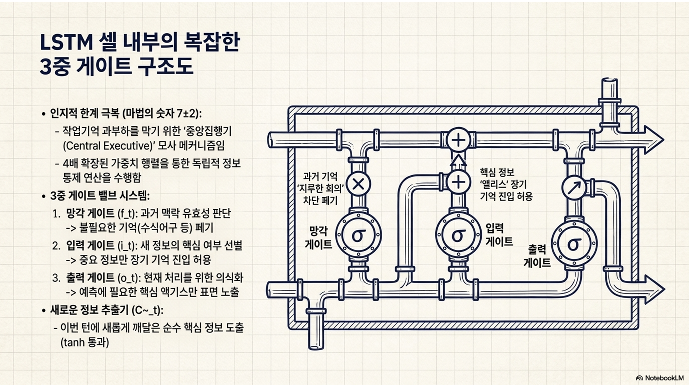
[그림 9] 셀 상태 고속도로를 통과하는 장기 정보의 흐름
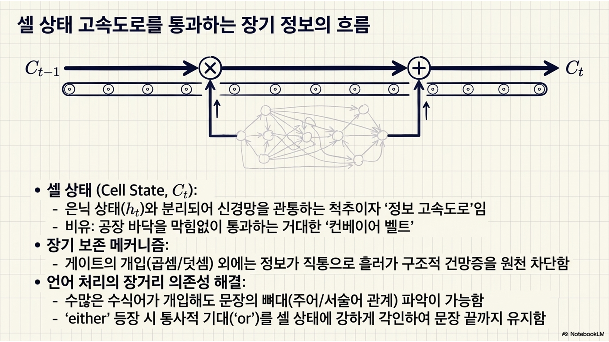
[그림 10] 기본 RNN과 LSTM의 문장 길이 증대 시 기억 보존율 비교
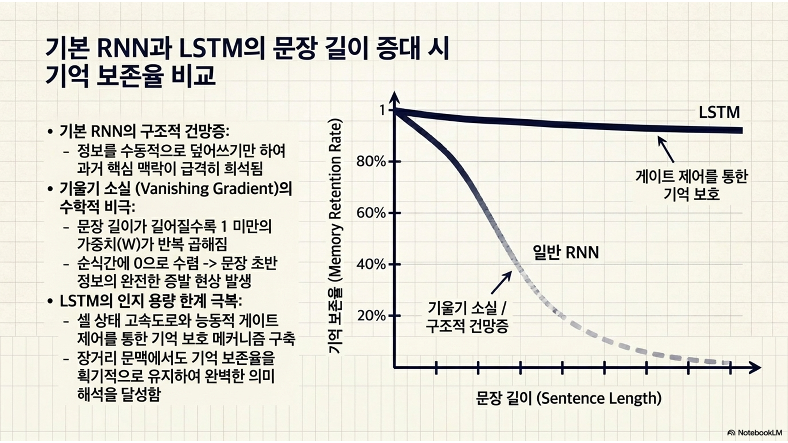
[실습 2-2] LSTM 게이트 시스템 순전파 구현
보충 해설: LSTM의 4가지 독립 연산에 대한 필요성과 가중치 행렬이 4배인 이유
기본 RNN은 들어오는 정보를 수동적으로 더하기만 하지만, LSTM은 정보를 능동적으로 제어하기 위해 내부적으로 4가지 독립적인 프로세스(3개의 게이트 + 1개의 정보 추출)를 가동함.
이 4가지 연산은 완전히 독립된 연산이라서 각각 고유의 시냅스 연결 가중치(\(W\)) 행렬을 따로 가져야 함. 따라서 물리적 가중치 공간의 크기가 일반 RNN의 4배가 필요함.
계산 효율성을 극대화하기 위해 코드에서는 4개의 가중치 행렬을 따로 만들지 않고, 세로로 4배 길게 확장하여 하나의 거대한 행렬(hidden_size * 4)로 묶어 한 번에 내적(dot) 연산을 처리함.
왜 4개의 독립된 연산이 필요한가?
인간이 긴 문장을 읽을 때 머릿속 작업기억 안에서는 단순히 정보를 더하기만 하지 않음. 필요 없는 과거 정보는 지우고(\(f_t\)), 새로운 중요한 정보는 기억에 추가하며(\(i_t\), \(\tilde{C}_t\)), 지금 당장 필요한 맥락만 의식 표면으로 꺼내는(\(o_t\)) 복잡한 정보 제어가 일어남.
LSTM은 이 고도의 심리적 통제 과정을 구현하기 위해 3개의 통제 밸브(게이트)와 1개의 새로운 정보 추출기를 두어 총 4개의 독립된 연산 메커니즘을 가동함.
독립된 4가지 연산의 정체와 역할
망각 게이트(\(f_t\)): 기억 유통기한 관리자
수학적 특징: 연산 후 시그모이드 함수를 통과하여 0.0~1.0 사이의 값을 가짐.
역할: 과거의 장기 기억 컨베이어 벨트(셀 상태)에 남아 있는 정보 중 “더 이상 쓸모없어져서 버릴 정보”가 무엇인지 결정함.
예시: 문장에서 주어가 바뀌었거나, 수식해주는 부사구가 끝나서 더 이상 기억할 필요가 없을 때 밸브를 0.0에 가깝게 닫아 기억을 청소하고 새로운 인지 공간을 확보함.
입력 게이트(\(i_t\)): 정보 진입로 차단기
수학적 특징: 연산 후 시그모이드 함수를 통과하여 0.0~1.0 사이의 값을 가짐.
역할: 방금 읽은 현재 단어의 정보 중 얼마나 많은 양을 장기 기억 컨베이어 벨트에 새로 태울지 그 진입 비율을 결정함.
역할의 중요성: 이 게이트가 없다면 문맥에 상관없는 무의미한 조사나 노이즈 정보까지 장기 기억을 오염시키게 됨. 이를 차단하는 방어벽임.
후보 셀 상태(candidate cell state, \(\tilde{C}_t\) 실습 2-2 코드의 C_bar): 새로운 정보 추출기
수학적 특징: 연산 후 하이퍼볼릭 탄젠트(\(\tanh\)) 함수를 통과하여 -1.0~1.0 사이의 압축된 값을 가짐.
역할: 과거 맥락과 현재 읽은 단어를 조합하여 이번 턴에 새롭게 깨달은 순수한 핵심 사실/정보 그 자체를 의미함.
연결 원리: 이 새 정보(\(\tilde{C}_t\))에 입력 게이트의 합격 비율(\(i_t\))이 곱해져서, 최종적으로 장기 기억 벨트에 누적(\(+\)) 업데이트됨.
출력 게이트(\(o_t\)): 의식 표면 필터
수학적 특징: 연산 후 시그모이드 함수를 통과하여 0.0~1.0 사이의 값을 가짐.
역할: 업데이트가 모두 완료된 든든한 장기 기억(셀 상태) 중, 지금 당장 이 순간 의식의 표면(은닉 상태)으로 꺼내어 다음 단어를 예측하는 데 쓸 정보가 무엇인지 필터링함.
의미: 깊은 무의식(장기 기억)에 저장된 방대한 맥락 중, 바로 다음 단어의 통사/의미적 기대를 실시간으로 계산하는 데 필요한 핵심 액기스만 의식 위로 노출시킴.
Code
# =========================================================================# [실습 2-2] LSTM 셀 단위의 게이트 연산 및 장기 기억 업데이트 시뮬레이션# =========================================================================# 0과 1 사이의 통제 밸브 역할을 수행할 시그모이드 비선형 활성화 함수를 정의함def sigmoid(x):return1/ (1+ np.exp(-x))# ---------------------------------------------------------# 1. LSTM 가중치 파라미터 초기화(forget, input, cell, output)# ---------------------------------------------------------# 실습 2-1과 동일하게 입력 차원 4, 은닉(기억) 차원 3으로 가정함# 단, LSTM은 4가지 독립된 연산이 필요하므로 가중치 행렬 크기를 4배로 확장하여 하나로 묶어 생성함W_h = np.random.randn(hidden_size *4, hidden_size)W_x = np.random.randn(hidden_size *4, input_size)b_lstm = np.zeros((hidden_size *4, 1))# LSTM 순전파 루프 가동 전 초기화: 은닉 상태(h)와 거대한 장기 기억 컨베이어 벨트인 셀 상태(C)를 모두 0으로 비워둠h_prev_lstm = np.zeros((hidden_size, 1))C_prev = np.zeros((hidden_size, 1))# ---------------------------------------------------------# 2. LSTM 내부 게이트 통제 루프 가동# ---------------------------------------------------------print("[LSTM의 시점별 게이트 통제 및 기억 컨베이어 벨트(셀 상태) 업데이트 과정]")# 실습 2-1과 동일한 5턴짜리 문장 입력(X_sequence)을 그대로 재사용함for t inrange(sequence_length): x_t = X_sequence[t]# 4개의 게이트 연산을 한 번의 거대한 행렬 내적으로 병렬 처리하여 속도를 높임 gates = np.dot(W_h, h_prev_lstm) + np.dot(W_x, x_t) + b_lstm# 거대한 gates 텐서를 3차원씩(hidden_size = 3) 4등분하여 각각의 역할(f, i, C_bar, o) 변수에 분배함 f_raw = gates[0:hidden_size] i_raw = gates[hidden_size:hidden_size*2] C_bar_raw = gates[hidden_size*2:hidden_size*3] o_raw = gates[hidden_size*3:]# 1. 망각 게이트: 시그모이드를 거쳐 과거의 기억을 얼마나 지워버릴지(0.0~1.0) 비율을 결정함 f_t = sigmoid(f_raw)# 2. 입력 게이트: 시그모이드를 거쳐 새로운 입력 정보를 얼마나 받아들일지(0.0~1.0) 비율을 결정함 i_t = sigmoid(i_raw)# 3. 새로운 후보 기억: tanh를 거쳐 현재 입력으로부터 뽑아낸 새로운 팩트 정보(-1.0~1.0)를 산출함 C_bar = np.tanh(C_bar_raw)# [핵심] 컨베이어 벨트 갱신: 과거의 셀 상태(C_prev)에 망각 밸브(f_t)를 곱해 쓸데없는 것을 버리고, 새로 들어온 후보(C_bar)에 입력 밸브(i_t)를 곱해 벨트 위에 얹음 C_t = f_t * C_prev + i_t * C_bar# 4. 출력 게이트: 갱신된 컨베이어 벨트 정보 중 지금 당장 바깥(은닉 상태)으로 내보낼 정보의 비율을 결정함 o_t = sigmoid(o_raw)# 5. 최종 은닉 상태 갱신: 컨베이어 벨트(C_t)를 tanh로 한번 다듬은 뒤 출력 밸브(o_t)를 통과시켜 현재 단기 기억(h)으로 내보냄 h_current_lstm = o_t * np.tanh(C_t)# 시점별 셀 상태(장기 기억)의 갱신 현황을 콘솔에 출력함print(f"Time Step {t+1} | 장기 기억 셀 상태(C_t) 텐서값: \n{C_t.flatten()}")# 다음 턴을 위해 은닉 상태와 셀 상태를 모두 과거 변수로 이월시킴 h_prev_lstm = h_current_lstm C_prev = C_tprint("\n-> LSTM 문장 처리 완료. 기본 RNN과 달리 초기 단어의 정보가 셀 상태(C)를 타고 끝까지 소실 없이 보존됨.")
[LSTM의 시점별 게이트 통제 및 기억 컨베이어 벨트(셀 상태) 업데이트 과정]
Time Step 1 | 장기 기억 셀 상태(C_t) 텐서값:
[ 0.2142139 -0.29742847 -0.07945014]
Time Step 2 | 장기 기억 셀 상태(C_t) 텐서값:
[ 0.23756236 -0.44947178 0.62855222]
Time Step 3 | 장기 기억 셀 상태(C_t) 텐서값:
[-0.62484466 -0.11493187 0.67339477]
Time Step 4 | 장기 기억 셀 상태(C_t) 텐서값:
[-0.49213394 0.64084139 -0.06769506]
Time Step 5 | 장기 기억 셀 상태(C_t) 텐서값:
[-0.11826225 -0.79137043 0.1185994 ]
-> LSTM 문장 처리 완료. 기본 RNN과 달리 초기 단어의 정보가 셀 상태(C)를 타고 끝까지 소실 없이 보존됨.
13주차 요약 및 다음 주 예고
요약
문장 처리의 확률적 모형: 인간의 뇌는 멈춰 있는 기계가 아니라, 지금까지의 맥락을 바탕으로 다음 단어를 확률적으로 쉼 없이 예측하는 존재임을 확인했음. 놀라움 이론을 통해 뇌의 예측이 빗나갔을 때 발생하는 정보이론적 놀라움이 실제 인간의 안구 운동 지연(인지 부하)과 직결됨을 파이썬 코드로 검증함.
순환 신경망(RNN/LSTM)의 인지적 함의: 과거의 텍스트 맥락을 현재로 이어주는 RNN 구조와, 망각과 주의 집중(게이트 메커니즘)을 통해 기억 소실을 방지하는 LSTM 구조를 바닥부터 구현함. 이는 인간의 한정된 작업기억이 어떻게 긴 문장을 문맥의 끊김 없이 파악해내는지 설명하는 대표적인 계산주의적 모델임.
다음 주 예고
14주차: 강화학습과 인지제어: 언어 처리 모델링을 마무리하고, 다음 주에는 인간이 환경과 상호작용하며 ’보상(reward)’을 바탕으로 최적의 행동을 학습하는 과정인 강화학습(reinforcement learning)으로 진입함.
도파민과 예측 오차
뇌의 쾌락 물질로 알려진 도파민이 단순한 쾌감이 아니라, 인공지능의 핵심 알고리즘 중 하나인 ’보상 예측 오차(reward prediction error, RPE)’를 계산하는 생물학적 신호임을 깊이 있게 탐구할 예정임.
보상 예측 오차: 실제 환경에서 얻은 보상과 속으로 기대했던 보상 간의 차이(오차)를 뜻함. 뇌의 도파민 시스템은 이에 대한 계산결과를 바탕으로 행동을 수정하고 학습을 수행함.
탐색(exploration) vs 활용(exploitation): 이미 알고 있는 맛집을 갈 것인가(활용), 새로운 맛집을 모험할 것인가(탐색)? 이 인지적 딜레마를 수학적으로 모델링하여 시뮬레이션해봄.